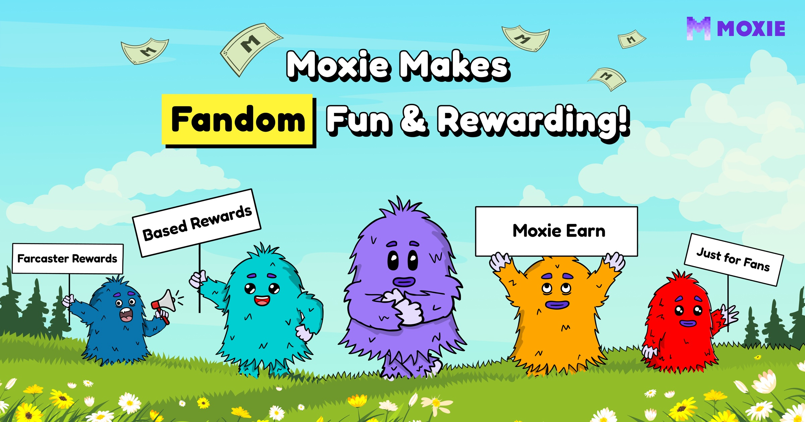
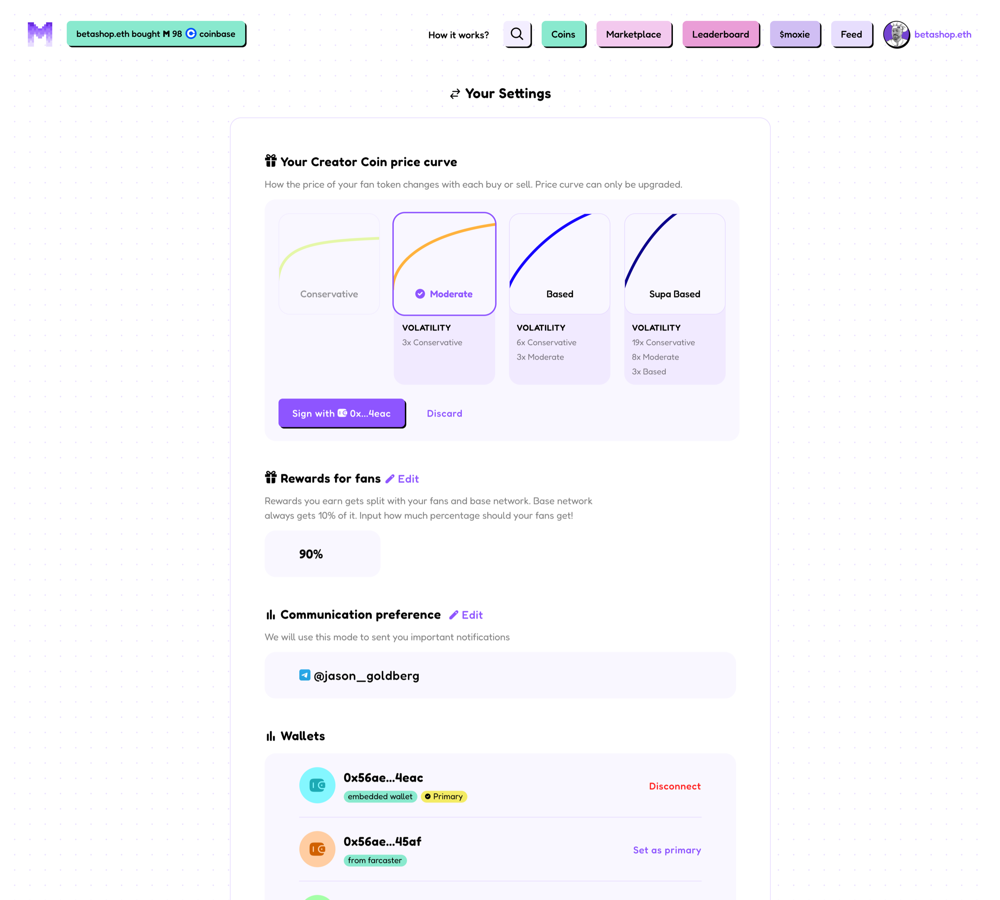
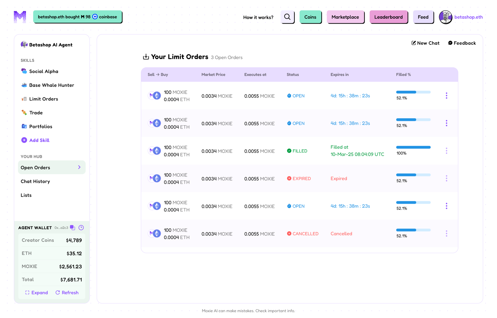
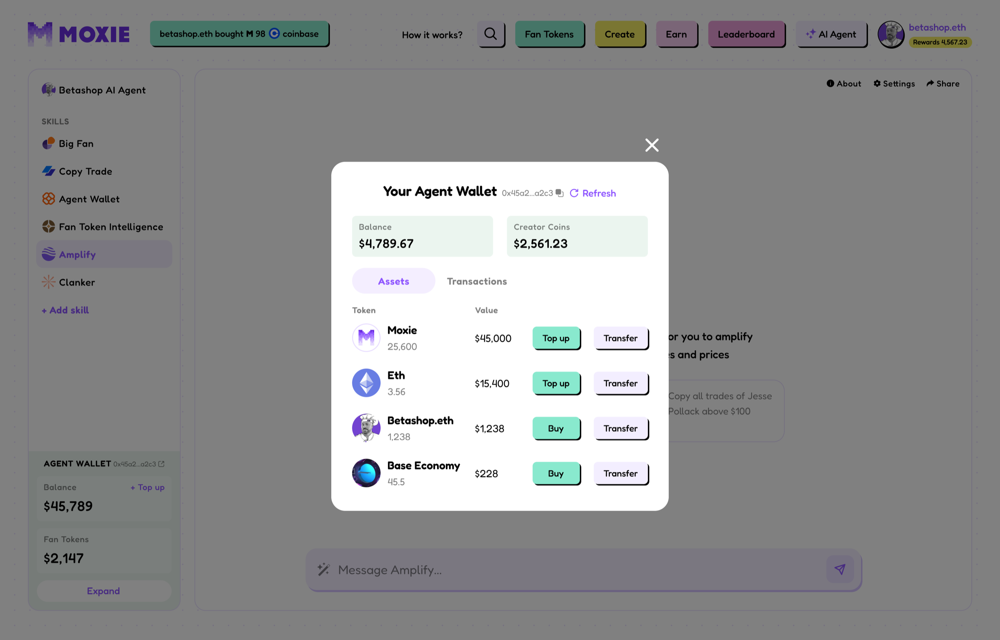
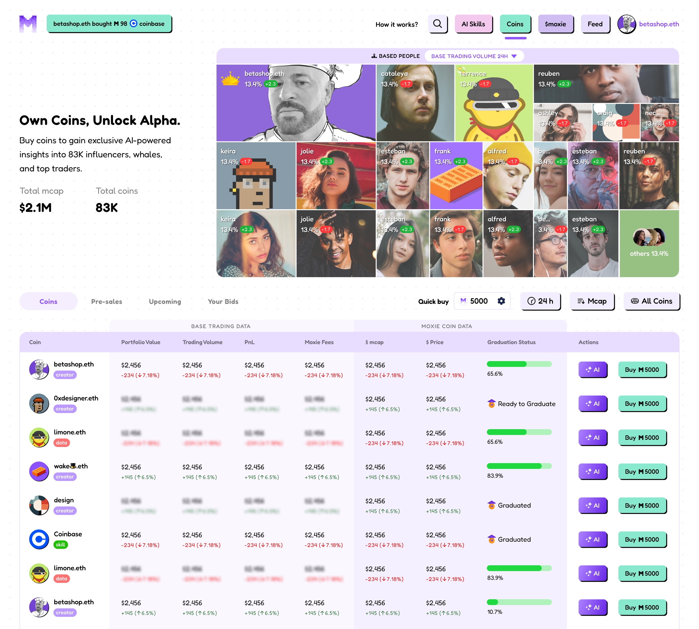
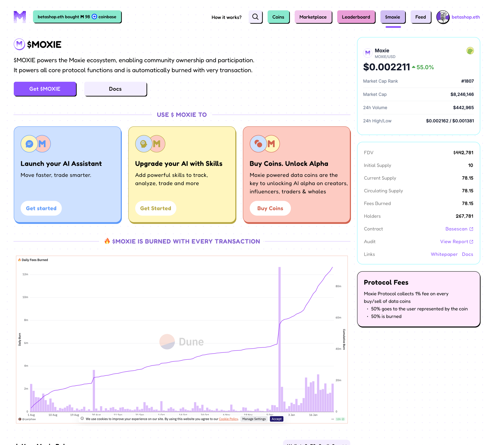
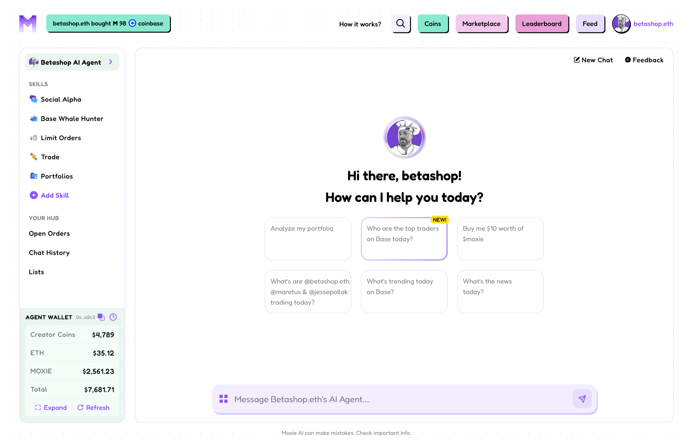
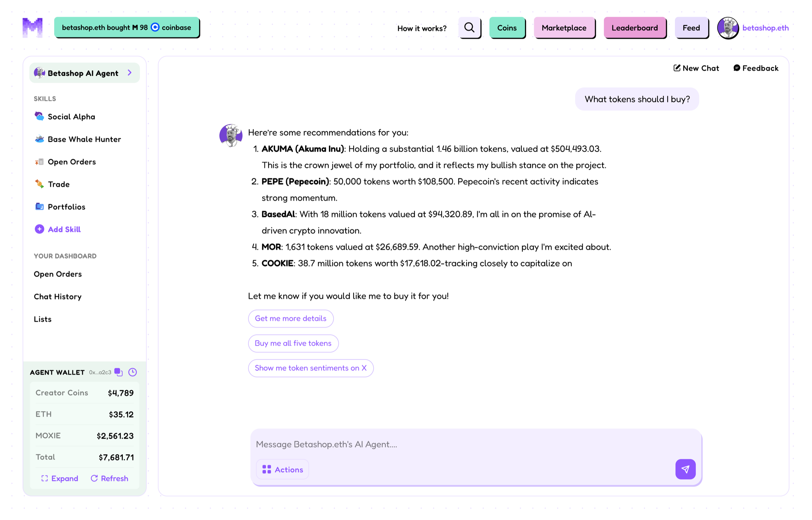
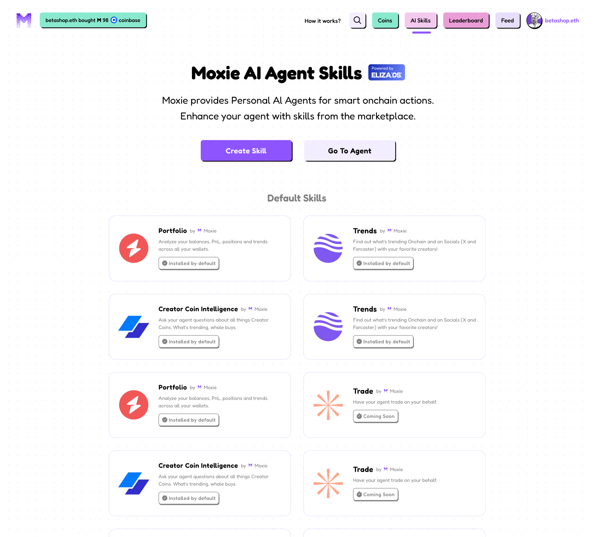
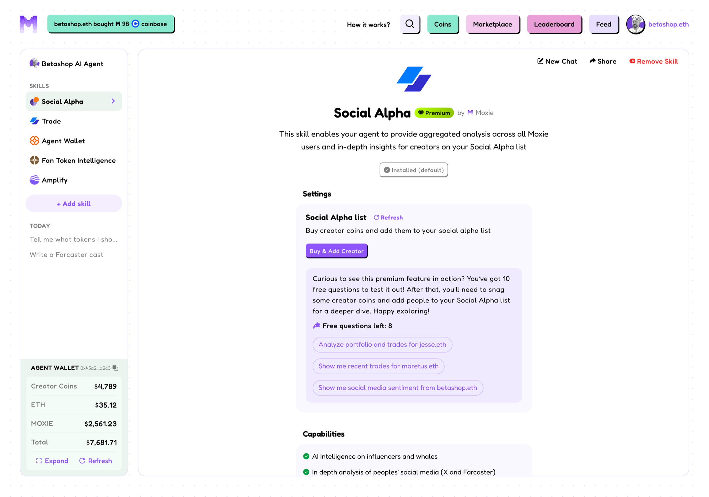

How do you make crypto understandable?
Moxie let people launch, discover and trade creator tokens. The idea was simple — the underlying system wasn't. Working with the founders and engineering, I designed the product end to end as it evolved from Farcaster Frames to an in-house platform to AI-powered trading. The goal: let users understand the outcome without understanding the infrastructure.
Co-founder · Design lead
Product & brand design, end to end
Founders · engineering
Frames → platform · token launch · trading · discovery

The problem
Crypto was asking users to understand the system before they could participate.
For a creator, the intent was “launch something around your community.” For a supporter, “support a creator you believe in.” But underneath those simple actions sat a chain of infrastructure:
Starting with Farcaster Frames
We put the experience where discovery happened.
Frames let users discover a creator and interact with their token without leaving the social experience — a powerful distribution mechanism.
But the more we added, the more the interface fought us. Frames were button-driven — choose → continue → choose → confirm — and navigation was largely forward/back, so users had to remember information across states. A typical complex journey involved 5–8 interaction states, with little room for persistent context, rich market information or real trading interactions.
Moving the experience in-house
Frames proved the idea. They also showed us where the product needed to go.
The product was outgrowing the surface it was built on. Moving in-house gave us control over navigation, discovery, trading, portfolios, market information, transaction states and analytics — and a design principle to build them around:
The product didn't hide complexity. It revealed it progressively.

Simplifying trading
Trading needed to feel like a decision, not a transaction builder.
The new experience brought the important information together: what am I buying, how much am I paying, what will I receive, what happens next.


Making the market understandable
More information wasn't automatically better.
As Moxie grew beyond launching tokens, users needed context — price, volume, activity, positions, portfolio performance, trading history. The hierarchy followed the decision, not the data:


But there was still too much to understand. “Why is this token moving?” “How does this compare with another token?” A dashboard could provide the information — users still had to interpret it themselves. So we asked: what if the interface could understand the question?
AI
From navigating crypto to talking to it.
An AI layer let users ask about tokens and markets in natural language — “what's happening with this token?”, “why did it go up today?”, “compare this with another Base token” — and turned complex market information into a direct explanation. The more interesting part was making it actionable:




Let AI handle complexity. Keep the user in control. For consequential actions the AI was never a black box — users could see what they asked for, what the agent understood, what would happen, what it costs, what they'd receive, and when it executed. Describe → Understand → Confirm → Execute.
The evolution
Three stages. One direction.
Frames
Make crypto accessible where people discovered creators.
In-house product
Make complex interactions understandable through information architecture and interaction design.
AI
Make information and actions accessible through natural language.
The product eventually expanded beyond creator tokens to trading across Base assets. The underlying problem never changed — discover, understand, decide, trade — the system built for creator tokens had become a general interface for on-chain markets.
Outcomes
What I learned
Good crypto UX isn't about hiding complexity. It's about putting it where it belongs.
Users shouldn't need to understand a bonding curve to buy a creator token, a DEX to trade, or a dashboard before they can ask a question. The product should do that work for them. I didn't design a crypto trading app — I designed ways for people to interact with a complex financial system without needing to understand the system first.